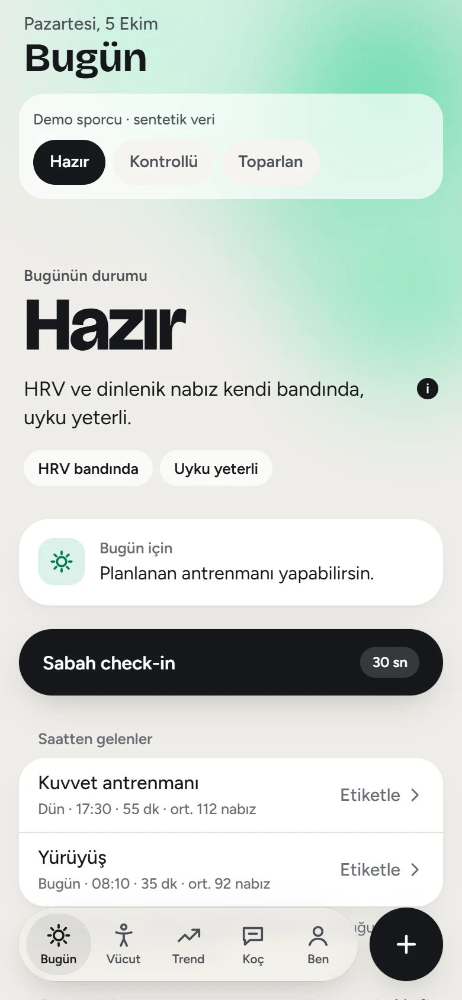
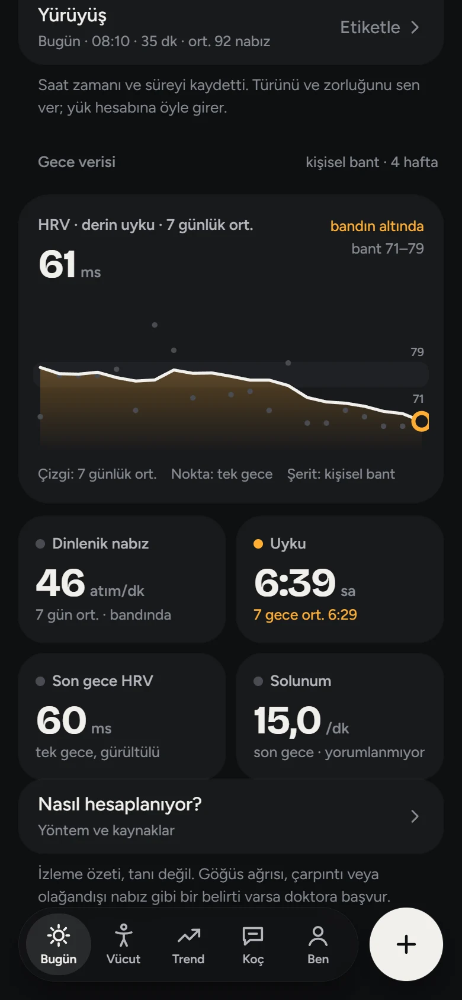
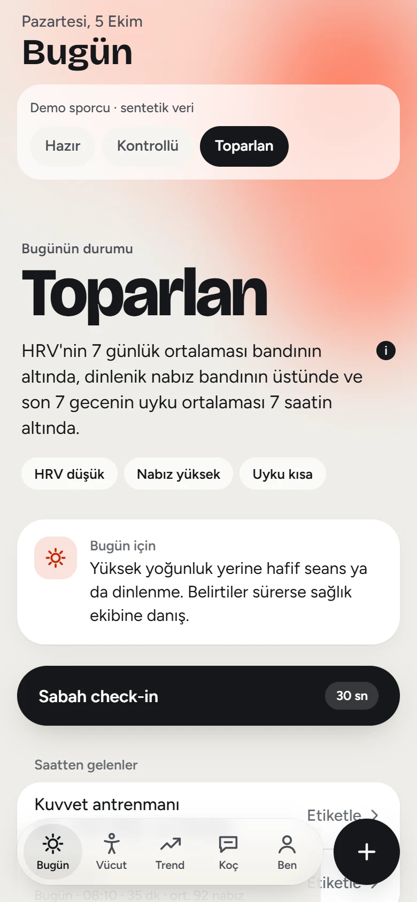
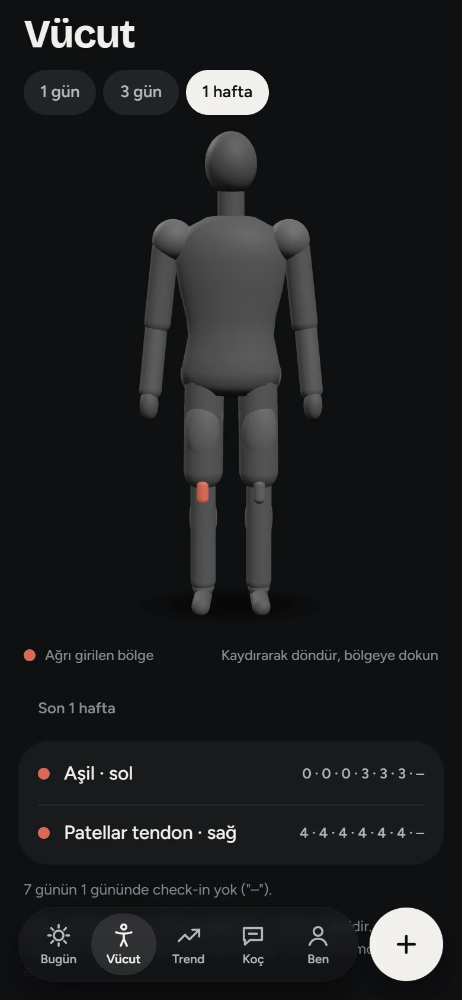

<title>HoopLab tanıtım yönleri</title>
<meta name="claude:viewport-fit-sides" content="cover">
<meta name="viewport" content="width=device-width, initial-scale=1, viewport-fit=cover">
<meta charset="utf-8">
<link rel="preconnect" href="https://fonts.googleapis.com">
<link rel="preconnect" href="https://fonts.gstatic.com" crossorigin>
<link rel="stylesheet" href="https://fonts.googleapis.com/css2?family=Big+Shoulders+Display:wght@800;900&family=Bricolage+Grotesque:opsz,wght@12..96,700;12..96,800&family=Figtree:wght@400;500;600&family=Instrument+Serif:ital@0;1&family=JetBrains+Mono:wght@400;500&family=Newsreader:ital,opsz,wght@0,6..72,400;0,6..72,500;1,6..72,400;1,6..72,500&display=swap">
<style>
/* Maket: hooplab.dev için üç yön (A şut yayı, B gece → sabah, C afiş). Veri sentetik.
   Her yön kendi görsel dünyasını kurar (tek görünüm, bilerek); gerçek sayfada açık / koyu tema token'larla gelir.
   Düzen: üstte yön seçici, altta seçili yönün tam sayfası; imza hareket kaydırmaya bağlı tek çizgi. */
:root {
  /* Hale token'ları (packages/theme) */
  --paper: #EFEDE8;
  --night: #0E0F11;
  --ink: #15171A;
  --ink2: #4A4E56;
  --cream: #F1F0EC;
  --mute-d: #B3B5BB;
  --green: #1FA874; --green-ink: #077A52; --green-d: #3CCB92;
  --yellow: #E8930C; --yellow-ink: #9A6004; --yellow-d: #FFAE33;
  --red: #E8492F; --red-d: #FF6B52;
  --aura1: #FFC24D; --aura2: #FFE3A3; --aura3: #FF9F6B;
  /* B'nin gecesi */
  --b-night: #0A0F1E; --b-night2: #141B33; --b-dawn: #F4E7D2; --b-amber: #FFB547;
  --display: 'Bricolage Grotesque', 'Figtree', system-ui, sans-serif;
  --serif-it: 'Instrument Serif', 'Newsreader', Georgia, serif;
  --news: 'Newsreader', Georgia, 'Times New Roman', serif;
  --poster: 'Big Shoulders Display', 'Bricolage Grotesque', Impact, sans-serif;
  --text: 'Figtree', system-ui, -apple-system, 'Segoe UI', sans-serif;
  --mono: 'JetBrains Mono', ui-monospace, 'SF Mono', Consolas, monospace;
  --gx: max(16px, env(safe-area-inset-left, 0px));
  --gxr: max(16px, env(safe-area-inset-right, 0px));
  --max: 1180px;
  color-scheme: light;
}
*, *::before, *::after { box-sizing: border-box; }
html { -webkit-text-size-adjust: 100%; }
body { margin: 0; background: var(--paper); color: var(--ink); font: 16px/1.55 var(--text); -webkit-font-smoothing: antialiased; overflow-x: hidden; }
body::before { content: ""; position: fixed; inset: 0 0 auto; height: env(safe-area-inset-top, 0px); z-index: 60; background: var(--night); }
img { max-width: 100%; display: block; }
a { color: inherit; }
:focus-visible { outline: 2px solid var(--aura1); outline-offset: 3px; border-radius: 6px; }
h1, h2, h3, p { margin: 0; }
h1, h2 { text-wrap: balance; }

/* ---------- Yön seçici ---------- */
.switch { position: sticky; top: env(safe-area-inset-top, 0px); z-index: 50; background: var(--night); color: var(--cream);
  padding-block: 10px; padding-left: var(--gx); padding-right: var(--gxr); display: flex; align-items: center; gap: 12px; flex-wrap: wrap; }
.switch .tag { font: 500 11px/1 var(--mono); letter-spacing: .08em; text-transform: uppercase; color: var(--mute-d); }
.switch nav { display: flex; gap: 6px; flex-wrap: wrap; }
.switch a { text-decoration: none; font: 600 13px/1 var(--text); padding: 9px 13px; border-radius: 999px; background: #222327; color: var(--cream); }
.switch a[aria-current="true"] { background: var(--cream); color: var(--night); }
.switch .hint { margin-left: auto; font: 400 12px/1.3 var(--text); color: var(--mute-d); }
@media (max-width: 640px) { .switch .hint { display: none; } }

.dir { position: relative; overflow: hidden; }
.wrap { max-width: var(--max); margin: 0 auto; padding-left: var(--gx); padding-right: var(--gxr); }
.line-svg { position: absolute; inset: 0; width: 100%; height: 100%; pointer-events: none; overflow: visible; }

/* Ortak telefon ve kart */
.phone { position: relative; width: clamp(190px, 24vw, 290px); aspect-ratio: 390 / 844; max-width: 100%; border-radius: 15% / 7%; padding: 7px; background: #0B0C0E;
  box-shadow: 0 0 0 1px rgba(255,255,255,.06), 0 30px 60px -20px rgba(0,0,0,.55); }
.phone img { width: 100%; height: 100%; object-fit: cover; border-radius: 13% / 6%; }
.mini { position: absolute; background: #FFFFFF; color: var(--ink); border-radius: 16px; padding: 10px 13px; min-width: 128px;
  box-shadow: 0 0 0 .5px rgba(0,0,0,.06), 0 14px 30px -12px rgba(0,0,0,.35); font-size: 12px; line-height: 1.3; will-change: transform; }
.mini .k { color: var(--ink2); font-weight: 500; }
.mini .v { font: 700 20px/1.1 var(--display); font-variant-numeric: tabular-nums; margin-top: 3px; }
.mini .v small { font: 500 12px var(--text); color: var(--ink2); margin-left: 3px; }
.mini .s { display: inline-flex; align-items: center; gap: 5px; margin-top: 5px; font-weight: 600; font-size: 11px; color: var(--green-ink); }
.mini .s::before { content: ""; width: 7px; height: 7px; border-radius: 50%; background: var(--green); }
.mini.dark { background: #18191C; color: var(--cream); }
.mini.dark .k { color: var(--mute-d); }
.mini.dark .v small { color: var(--mute-d); }
.mini.dark .s { color: var(--green-d); }
.btn { display: inline-flex; align-items: center; gap: 8px; text-decoration: none; font: 600 15px/1 var(--text); padding: 14px 20px; border-radius: 999px; }
.synth { font: 500 11px/1.4 var(--mono); letter-spacing: .04em; opacity: .7; }

/* =========================================================
   A · Şut yayı: açık / koyu bantlar, tek kalın çizgi (difference), editoryal başlık
   ========================================================= */
.dir-a { background: var(--paper); }
.dir-a .band { position: relative; padding-block: clamp(72px, 12vw, 150px); }
.dir-a .band.dark { background: var(--night); color: var(--cream); }
.dir-a .a-h { font: 800 clamp(44px, 8.4vw, 112px)/.92 var(--display); letter-spacing: -.035em; }
.dir-a .a-h em { display: block; font: 400 italic 1.08em/.9 var(--serif-it); letter-spacing: -.02em; }
.dir-a .lead { max-width: 46ch; font-size: clamp(16px, 1.6vw, 19px); color: var(--ink2); margin-top: 22px; }
.dir-a .dark .lead { color: var(--mute-d); }
.dir-a .eyebrow { font: 500 12px/1 var(--mono); letter-spacing: .1em; text-transform: uppercase; margin-bottom: 18px; color: var(--ink2); }
.dir-a .dark .eyebrow { color: var(--mute-d); }
.dir-a .hero { padding-top: clamp(48px, 8vw, 96px); display: grid; grid-template-columns: 1.15fr .85fr; gap: 32px; align-items: center; }
.dir-a .hero > * { min-width: 0; }
.dir-a .actions { display: flex; gap: 10px; flex-wrap: wrap; margin-top: 28px; }
.dir-a .btn.primary { background: var(--ink); color: var(--paper); }
.dir-a .btn.ghost { background: transparent; box-shadow: inset 0 0 0 1.5px var(--ink); color: var(--ink); }
.dir-a .stage { position: relative; display: grid; place-items: center; padding-block: 40px; }
.dir-a .stage .mini:nth-of-type(1) { left: -6%; top: 14%; }
.dir-a .stage .mini:nth-of-type(2) { right: -4%; top: 38%; }
.dir-a .stage .mini:nth-of-type(3) { left: 0; bottom: 10%; }
.dir-a .split { display: grid; grid-template-columns: 1fr 1fr; gap: clamp(28px, 6vw, 80px); align-items: center; }
.dir-a .split > * { min-width: 0; }
.dir-a .split.rev > :first-child { order: 2; }
.dir-a .status { display: inline-flex; align-items: center; gap: 12px; padding: 14px 22px 14px 16px; border-radius: 999px; background: #FFFFFF; box-shadow: 0 14px 30px -14px rgba(0,0,0,.3); font: 800 clamp(26px, 3.4vw, 40px)/1 var(--display); letter-spacing: -.02em; }
.dir-a .status i { width: 22px; height: 22px; border-radius: 50%; background: radial-gradient(circle at 35% 35%, #CBF3E1, var(--green)); box-shadow: 0 0 0 6px rgba(31,168,116,.16); }
.dir-a .bandchart { margin-top: 28px; width: 100%; max-width: 520px; }
.dir-a .rule { background: #18191C; border-radius: 18px; padding: 18px 20px; font: 400 13px/1.65 var(--mono); color: #D9D8D3; overflow-x: auto; box-shadow: 0 0 0 1px rgba(255,255,255,.05); }
.dir-a .rule b { color: var(--aura1); font-weight: 500; }
.dir-a .rule .c { color: #878A92; }
.dir-a .count { display: flex; gap: 36px; margin-top: 30px; flex-wrap: wrap; }
.dir-a .count div { font: 800 clamp(40px, 5vw, 64px)/1 var(--display); letter-spacing: -.03em; font-variant-numeric: tabular-nums; }
.dir-a .count span { display: block; font: 500 13px/1.3 var(--text); letter-spacing: 0; color: var(--mute-d); margin-top: 6px; }
.dir-a .quote { background: #FFFFFF; border-radius: 22px; padding: 22px 24px; box-shadow: 0 20px 40px -24px rgba(0,0,0,.35); max-width: 440px; }
.dir-a .quote p { font: 400 italic 22px/1.35 var(--serif-it); }
.dir-a .quote .src { margin-top: 12px; font: 500 12px/1.4 var(--mono); color: var(--ink2); }
.dir-a .quote .cut { margin-top: 12px; font-size: 13px; color: var(--ink2); text-decoration: line-through; text-decoration-color: var(--red); }
.dir-a .finale { text-align: center; padding-block: clamp(90px, 14vw, 180px) clamp(60px, 9vw, 110px); }
.dir-a .word { font: 800 clamp(64px, 17vw, 240px)/.85 var(--display); letter-spacing: -.05em; position: relative; display: inline-block; }
.dir-a .finale .lead { margin: 26px auto 0; }
.dir-a .finale .btn { background: var(--cream); color: var(--night); margin-top: 28px; }
.dir-a .line-svg { z-index: 5; mix-blend-mode: difference; }
.dir-a .line-svg path { fill: none; stroke: #FFFFFF; stroke-linecap: round; stroke-linejoin: round; }
@media (max-width: 760px) {
  .dir-a .hero, .dir-a .split { grid-template-columns: 1fr; }
  .dir-a .split.rev > :first-child { order: 0; }
  .dir-a .stage .mini:nth-of-type(1) { left: 0; }
  .dir-a .stage .mini:nth-of-type(2) { right: 0; }
}

/* =========================================================
   B · Gece → sabah: sayfa geceden sabaha akar, çizgi gecenin HRV izi, kişisel bant arkasında
   ========================================================= */
.dir-b { background: linear-gradient(180deg, var(--b-night) 0%, var(--b-night) 18%, var(--b-night2) 42%, #3A2E4A 58%, #C98A5E 70%, var(--b-dawn) 80%, var(--b-dawn) 100%); color: #E9E7F2; }
.dir-b .line-svg { z-index: 0; }
.dir-b .line-svg .band { fill: none; stroke: rgba(255,181,71,.10); stroke-linecap: round; stroke-linejoin: round; }
.dir-b .line-svg .trace { fill: none; stroke: var(--b-amber); stroke-width: 2.5; stroke-linecap: round; stroke-linejoin: round; filter: drop-shadow(0 0 6px rgba(255,181,71,.6)); }
.dir-b .line-svg .tip { fill: var(--b-amber); filter: drop-shadow(0 0 10px rgba(255,181,71,.9)); }
.dir-b .clock { position: fixed; z-index: 40; right: var(--gxr); bottom: calc(16px + env(safe-area-inset-bottom, 0px)); font: 500 13px/1 var(--mono); padding: 10px 14px; border-radius: 999px;
  background: rgba(10,15,30,.72); color: var(--b-amber); backdrop-filter: blur(8px); -webkit-backdrop-filter: blur(8px); font-variant-numeric: tabular-nums; }
.dir-b .scene { position: relative; z-index: 1; padding-block: clamp(80px, 14vw, 170px); }
.dir-b .stamp { font: 500 12px/1 var(--mono); letter-spacing: .08em; color: var(--b-amber); margin-bottom: 18px; }
.dir-b .b-h { font: 400 clamp(42px, 7.6vw, 104px)/.98 var(--news); letter-spacing: -.025em; }
.dir-b .b-h em { font-style: italic; color: #FFD9A0; }
.dir-b .lead { max-width: 48ch; margin-top: 22px; font-size: clamp(16px, 1.6vw, 19px); color: #B9B7CC; }
.dir-b .stars { position: absolute; inset: 0; pointer-events: none; background-image:
  radial-gradient(1px 1px at 12% 18%, #fff8, transparent 60%), radial-gradient(1px 1px at 68% 9%, #fff6, transparent 60%),
  radial-gradient(1.5px 1.5px at 84% 30%, #fff7, transparent 60%), radial-gradient(1px 1px at 33% 44%, #fff5, transparent 60%),
  radial-gradient(1px 1px at 52% 26%, #fff6, transparent 60%), radial-gradient(1px 1px at 7% 62%, #fff4, transparent 60%),
  radial-gradient(1px 1px at 91% 70%, #fff4, transparent 60%), radial-gradient(1.5px 1.5px at 26% 84%, #fff5, transparent 60%); }
.dir-b .hero-row { display: grid; grid-template-columns: 1.1fr .9fr; gap: 40px; align-items: end; }
.dir-b .hero-row > * { min-width: 0; }
.dir-b .readings { display: grid; grid-template-columns: repeat(4, minmax(0, 1fr)); gap: 1px; margin-top: 56px; background: rgba(255,255,255,.08); border-radius: 18px; overflow: hidden; }
.dir-b .readings div { background: rgba(10,15,30,.55); padding: 18px 18px 20px; }
.dir-b .readings dt { font: 500 11px/1.3 var(--mono); letter-spacing: .06em; text-transform: uppercase; color: #8F8DA8; }
.dir-b .readings dd { margin: 8px 0 0; font: 400 34px/1 var(--news); font-variant-numeric: tabular-nums; color: #F4F1FF; }
.dir-b .readings dd small { font: 400 13px var(--text); color: #8F8DA8; margin-left: 4px; }
.dir-b .readings .n { margin-top: 8px; font: 500 12px/1.3 var(--text); color: var(--green-d); }
.dir-b .twocol { display: grid; grid-template-columns: 1fr 1fr; gap: clamp(28px, 6vw, 90px); align-items: center; }
.dir-b .twocol > * { min-width: 0; }
.dir-b .dawn { color: var(--ink); }
.dir-b .dawn .lead { color: var(--ink2); }
.dir-b .dawn .stamp { color: #B35C12; }
.dir-b .dawn .b-h em { color: #B35C12; }
.dir-b .ready { font: 500 italic clamp(64px, 12vw, 168px)/.9 var(--news); letter-spacing: -.03em; color: var(--green-ink); }
.dir-b .paper { background: #FBF7EF; color: var(--ink); border-radius: 4px; padding: clamp(22px, 4vw, 40px); box-shadow: 0 30px 60px -30px rgba(80,50,20,.35); }
.dir-b .paper h3 { font: 500 26px/1.15 var(--news); }
.dir-b .paper p { margin-top: 12px; color: var(--ink2); font: 400 17px/1.6 var(--news); }
.dir-b .paper sup { font: 500 10px var(--mono); color: #B35C12; }
.dir-b .notes { margin: 18px 0 0; padding: 14px 0 0; border-top: 1px solid #E5DCCB; list-style: none; display: grid; gap: 8px; font: 400 12.5px/1.5 var(--mono); color: #5B5E66; }
.dir-b .notes li { overflow-wrap: anywhere; }
.dir-b .end { text-align: center; }
.dir-b .end .btn { background: var(--ink); color: var(--b-dawn); margin-top: 26px; }
@media (max-width: 760px) {
  .dir-b .hero-row, .dir-b .twocol { grid-template-columns: 1fr; }
  .dir-b .readings { grid-template-columns: repeat(2, minmax(0, 1fr)); }
}

/* =========================================================
   C · Afiş: tam genişlik durum bantları, kırpılmış dev kelimeler, ekranlar üst üste, saha çizgileri
   ========================================================= */
.dir-c { background: var(--paper); }
.dir-c .poster { position: relative; overflow: hidden; padding-block: clamp(70px, 10vw, 130px); isolation: isolate; }
.dir-c .giant { font: 900 clamp(120px, 30vw, 420px)/.78 var(--poster); letter-spacing: -.01em; text-transform: uppercase; white-space: nowrap; position: relative; z-index: 0; margin-left: -.04em; }
.dir-c .p-hazir { background: var(--paper); }
.dir-c .p-hazir .giant { color: var(--green); }
.dir-c .p-kontrol { background: var(--red); color: #1E0703; }
.dir-c .p-kontrol .giant { color: #FF9C85; text-align: right; margin-right: -.06em; }
.dir-c .p-kontrol .aura { background: radial-gradient(circle at 40% 40%, #FFD3C7, #FF7A5E 45%, #FF9C85 75%, transparent 76%); }
.dir-c .p-toparlan { background: var(--night); color: var(--cream); }
.dir-c .p-toparlan .giant { color: var(--red-d); }
.dir-c .aura { position: absolute; z-index: -1; width: 70vw; max-width: 900px; aspect-ratio: 1; border-radius: 50%; filter: blur(60px); opacity: .85;
  background: radial-gradient(circle at 40% 40%, var(--aura2), var(--aura1) 45%, var(--aura3) 75%, transparent 76%); right: -20vw; top: -10%; }
.dir-c .p-hazir .aura { background: radial-gradient(circle at 40% 40%, #CBF3E1, #6EDDB0 45%, #9BE7C6 75%, transparent 76%); }
.dir-c .over { position: relative; z-index: 2; display: grid; grid-template-columns: auto 1fr; gap: clamp(24px, 5vw, 70px); align-items: end; margin-top: calc(clamp(120px, 30vw, 420px) * -.42); }
.dir-c .over > * { min-width: 0; }
.dir-c .over .phone { transform: rotate(-4deg); }
.dir-c .p-kontrol .over { grid-template-columns: 1fr auto; }
.dir-c .p-kontrol .over .phone { transform: rotate(3deg); }
.dir-c .c-h { font: 800 clamp(30px, 4.6vw, 58px)/1 var(--poster); text-transform: uppercase; letter-spacing: .005em; }
.dir-c .copy p { max-width: 44ch; margin-top: 14px; font-size: clamp(16px, 1.5vw, 18px); }
.dir-c .p-hazir .copy p { color: var(--ink2); }
.dir-c .p-toparlan .copy p { color: var(--mute-d); }
.dir-c .btns { display: flex; gap: 10px; flex-wrap: wrap; margin-top: 22px; }
.dir-c .btn.primary { background: var(--ink); color: var(--paper); }
.dir-c .btn.ghost { box-shadow: inset 0 0 0 1.5px currentColor; }
.dir-c .court { position: absolute; inset: 0; width: 100%; height: 100%; z-index: 1; pointer-events: none; }
.dir-c .court path, .dir-c .court circle, .dir-c .court line { fill: none; stroke-width: 3; stroke-linecap: round; }
.dir-c .p-hazir .court * { stroke: rgba(21,23,26,.22); }
.dir-c .p-kontrol .court * { stroke: rgba(30,7,3,.3); }
.dir-c .p-toparlan .court * { stroke: rgba(241,240,236,.22); }
.dir-c .court text { font: 500 13px var(--mono); }
.dir-c .p-hazir .court text { fill: rgba(21,23,26,.6); }
.dir-c .p-kontrol .court text { fill: rgba(30,7,3,.7); }
.dir-c .p-toparlan .court text { fill: rgba(241,240,236,.6); }
.dir-c .facts { position: relative; background: var(--ink); color: var(--cream); padding-block: clamp(60px, 9vw, 110px); }
.dir-c .facts .row { display: grid; grid-template-columns: repeat(3, minmax(0, 1fr)); gap: 24px; }
.dir-c .facts .num { font: 900 clamp(64px, 11vw, 150px)/.85 var(--poster); font-variant-numeric: tabular-nums; color: var(--aura1); }
.dir-c .facts .lbl { margin-top: 10px; font: 600 15px/1.35 var(--text); max-width: 26ch; }
.dir-c .facts .sub { margin-top: 6px; font-size: 13px; color: var(--mute-d); max-width: 32ch; }
@media (max-width: 760px) {
  .dir-c .over, .dir-c .p-kontrol .over { grid-template-columns: 1fr; margin-top: calc(clamp(120px, 30vw, 420px) * -.3); }
  .dir-c .p-kontrol .over .phone { order: -1; justify-self: end; }
  .dir-c .facts .row { grid-template-columns: 1fr; }
}

@media (prefers-reduced-motion: reduce) {
  .mini { will-change: auto; }
}
</style>

<header class="switch" lang="tr">
  <span class="tag">hooplab.dev · maket</span>
  <nav aria-label="Tasarım yönü">
    <a href="#a" data-dir="a">A · Şut yayı</a>
    <a href="#b" data-dir="b">B · Gece → sabah</a>
    <a href="#c" data-dir="c">C · Afiş</a>
  </nav>
  <span class="hint">Kaydırdıkça çizgi ilerler · veri sentetik</span>
</header>

<!-- ================= A ================= -->
<article lang="tr" class="dir dir-a" id="dir-a" data-line="a">
  <svg class="line-svg" aria-hidden="true"><path></path></svg>

  <section class="band" data-pts="0.62,0.05 0.92,0.22 0.80,0.55 0.55,0.42 0.66,0.30 0.96,0.70 0.70,0.98">
    <div class="wrap hero">
      <div>
        <p class="eyebrow">Bir basketbolcunun kendi uygulaması</p>
        <h1 class="a-h">Her sayı, <em>kendi geçmişinle okunur.</em></h1>
        <p class="lead">HoopLab bilekliğin gece verisini ve 30 saniyelik sabah check-in'ini alır, her değeri senin son dört haftanla karşılaştırır. Her eşik yayımlanmış bir çalışmaya bağlı.</p>
        <div class="actions">
          <a class="btn primary" href="https://hooplab.dev/demo/">Demoyu aç</a>
          <a class="btn ghost" href="https://github.com/emir-eid/hooplab">Kaynak kod</a>
        </div>
      </div>
      <div class="stage">
        <figure class="phone" style="margin:0"></figure>
        <div class="mini" data-depth="0.08"><div class="k">Gece HRV'si</div><div class="v">64<small>ms</small></div><div class="s">bandında</div></div>
        <div class="mini" data-depth="-0.06"><div class="k">Uyku nabzı</div><div class="v">49<small>atım/dk</small></div><div class="s">bandında</div></div>
        <div class="mini" data-depth="0.12"><div class="k">Uyku</div><div class="v">7 sa 42<small>dk</small></div><div class="s">bandında</div></div>
      </div>
    </div>
  </section>

  <section class="band dark" data-pts="0.70,0.02 0.30,0.18 0.08,0.45 0.30,0.72 0.18,0.62 0.45,0.95">
    <div class="wrap split rev">
      <div style="display:grid;place-items:center">
        <figure class="phone" style="margin:0"></figure>
      </div>
      <div>
        <p class="eyebrow">01 · Veri</p>
        <h2 class="a-h">Gece <em>ölçülür.</em></h2>
        <p class="lead">Google Health her saat senkronlanır: HRV, uyku nabzı, uyku, solunum, SpO2, cilt sıcaklığı ve antrenmanlar. Saatin göremediğini sen eklersin: seansın zorluğu, ağrıyan bölge, sıradaki maç.</p>
      </div>
    </div>
  </section>

  <section class="band" data-pts="0.45,0.02 0.85,0.25 0.95,0.55 0.70,0.80 0.80,0.66 0.50,0.97">
    <div class="wrap split">
      <div>
        <p class="eyebrow">02 · Motor</p>
        <h2 class="a-h">Sabah <em>karşılaştırılır.</em></h2>
        <p class="lead">Son 7 gün, önceki 28 günle yarım standart sapma payıyla kıyaslanır. Hesabı testli bir TypeScript paketi yapar: aynı girdi, aynı sonuç.</p>
      </div>
      <div>
        <div class="status"><i></i>Hazır</div>
        <svg class="bandchart" viewBox="0 0 520 170" role="img" aria-label="Sentetik HRV: son 7 günün ortalaması kişisel bandın içinde">
          <rect x="0" y="52" width="520" height="56" rx="10" fill="#CBF3E1"></rect>
          <text x="10" y="45" fill="#077A52" font-family="JetBrains Mono, monospace" font-size="12">kişisel bant · 28 gün ± 0,5 SS</text>
          <polyline points="10,96 80,72 150,88 220,64 290,82 360,70 430,60 510,74" fill="none" stroke="#15171A" stroke-width="3" stroke-linejoin="round" stroke-linecap="round"></polyline>
          <circle cx="510" cy="74" r="7" fill="#1FA874" stroke="#FFFFFF" stroke-width="3"></circle>
          <text x="10" y="150" fill="#4A4E56" font-family="JetBrains Mono, monospace" font-size="12">7 gün önce</text>
          <text x="510" y="150" fill="#4A4E56" font-family="JetBrains Mono, monospace" font-size="12" text-anchor="end">bu sabah</text>
        </svg>
      </div>
    </div>
  </section>

  <section class="band dark" data-pts="0.40,0.02 0.10,0.30 0.30,0.55 0.92,0.48 0.86,0.80 0.60,0.98">
    <div class="wrap split rev">
      <div>
        <pre class="rule"><span class="c">// research/rules/toparlanma.json (gerçek kural)</span>
{
  <b>"id"</b>: "toparlanma-bant",
  <b>"value"</b>: {
    "rolling_days": 7,
    "baseline_days": 28,
    "sd_multiplier": 0.5,
    "metrics": ["hrv", "sleep_hr"]
  },
  <b>"sources"</b>: [
    "manresa-rocamora-2021",
    "vesterinen-2016",
    "buchheit-2014",
    "duking-2021"
  ]
}</pre>
      </div>
      <div>
        <p class="eyebrow">03 · Kanıt</p>
        <h2 class="a-h">Her eşik <em>bir kaynağa bağlı.</em></h2>
        <p class="lead">Uygulamadaki her sayı repoda bir kural dosyasında durur ve DOI ya da PMID'si doğrulanmış çalışmalara işaret eder.</p>
        <div class="count"><div>51<span>kural</span></div><div>122<span>kaynak</span></div></div>
      </div>
    </div>
  </section>

  <section class="band" data-pts="0.60,0.02 0.90,0.30 0.75,0.60 0.40,0.85 0.50,0.99">
    <div class="wrap split">
      <div>
        <p class="eyebrow">04 · Yorum</p>
        <h2 class="a-h">Koç <em>yalnız yorumlar.</em></h2>
        <p class="lead">Sabah özetini bir dil modeli, motorun hesapladığı sayılardan yazar. Sunucudaki denetçi, kaynağı ya da sayısı tutmayan cümleyi atar.</p>
      </div>
      <div class="quote">
        <p>Gece HRV'n son dört haftanın bandında; bugün planlanan yük uygun görünüyor.</p>
        <div class="src">kural: toparlanma-bant · 4 kaynak</div>
        <div class="cut">Kafein almadan antrenmana çıkma.</div>
        <div class="synth" style="margin-top:6px">denetçinin attığı cümle: kaynaksız öneri</div>
      </div>
    </div>
  </section>

  <section class="band dark finale" data-pts="0.50,0.02 0.20,0.20 0.36,0.40 0.5,0.46">
    <div class="wrap">
      <div class="word" id="a-word">HoopLab</div>
      <p class="lead">Sentetik bir sporcuyla canlı demo. Tarayıcından hiçbir şey çıkmaz.</p>
      <a class="btn" href="https://hooplab.dev/demo/">Demoyu aç</a>
      <p class="synth" style="margin-top:40px">HoopLab tıbbi bir cihaz değildir ve tıbbi tavsiye vermez.</p>
    </div>
  </section>
</article>

<!-- ================= B ================= -->
<article lang="tr" class="dir dir-b" id="dir-b" data-line="b" hidden>
  <div class="stars" aria-hidden="true"></div>
  <svg class="line-svg" aria-hidden="true"><path class="band"></path><path class="trace"></path><circle class="tip" r="6"></circle></svg>
  <div class="clock" aria-hidden="true">23:40</div>

  <section class="scene">
    <div class="wrap hero-row">
      <div>
        <p class="stamp">23:40 · uyku başladı</p>
        <h1 class="b-h">Sen uyurken <em>bileklik dinler.</em></h1>
        <p class="lead">HoopLab bir profesyonel basketbolcunun kendisi için yaptığı uygulama. Gece boyunca toplanan veriyi sabah senin kendi geçmişinle okur.</p>
      </div>
      <div></div>
    </div>
    <div class="wrap">
      <dl class="readings">
        <div><dt>Gece HRV'si</dt><dd>64<small>ms</small></dd><p class="n">bandında</p></div>
        <div><dt>Uyku nabzı</dt><dd>49<small>atım/dk</small></dd><p class="n">bandında</p></div>
        <div><dt>Solunum</dt><dd>14,2<small>/dk</small></dd><p class="n">bandında</p></div>
        <div><dt>Uyku</dt><dd>7:42<small>sa</small></dd><p class="n">bandında</p></div>
      </dl>
      <p class="synth" style="margin-top:12px;color:#8F8DA8">Sentetik sporcu. Arkadaki çizgi gecenin HRV izi, geniş şerit kişisel bant.</p>
    </div>
  </section>

  <section class="scene">
    <div class="wrap twocol">
      <div>
        <p class="stamp">02:10 · derin uyku</p>
        <h2 class="b-h">Değer tek başına <em>bir şey söylemez.</em></h2>
        <p class="lead">49 atım bir başkası için düşük, senin için sıradan olabilir. HoopLab her geceyi önceki 28 gününle karşılaştırır; popülasyon ortalaması yalnız sporculara özgü bir kaynak varsa kullanılır.</p>
      </div>
      <div style="display:grid;place-items:center"><figure class="phone" style="margin:0"></figure></div>
    </div>
  </section>

  <section class="scene">
    <div class="wrap twocol">
      <div class="paper">
        <h3>Toparlanma bandı</h3>
        <p>Son 7 gün, önceki 28 günle yarım standart sapma payıyla karşılaştırılır.<sup>1,2</sup> Bant uygulamaya sabit yazılmadı; repoda <code>toparlanma-bant</code> kuralında durur.</p>
        <ol class="notes">
          <li>1 · Manresa-Rocamora ve ark., 2021 · meta-analiz · 10.3390/ijerph181910299</li>
          <li>2 · Vesterinen ve ark., 2016 · RCT · 10.1249/MSS.0000000000000910</li>
        </ol>
      </div>
      <div>
        <p class="stamp">04:30 · kanıt</p>
        <h2 class="b-h">Her eşiğin <em>dipnotu var.</em></h2>
        <p class="lead">51 kural, 122 kaynak. DOI ya da PMID'si doğrulanamayan çalışma eklenmez; kaynaklar her push'ta geri çekilme kayıtlarına karşı yeniden denetlenir.</p>
      </div>
    </div>
  </section>

  <section class="scene dawn">
    <div class="wrap twocol">
      <div>
        <p class="stamp">07:05 · uyanış</p>
        <div class="ready">Hazır.</div>
        <p class="lead">Sabah ilk bakışta günün durumu ve nedenleri. Koçun yorumu yalnız hesaplanmış sayılardan yazılır, her cümlesi bir kurala dayanır.</p>
      </div>
      <div style="display:grid;place-items:center"><figure class="phone" style="margin:0"></figure></div>
    </div>
  </section>

  <section class="scene dawn end">
    <div class="wrap">
      <h2 class="b-h">Bir geceyi <em>kendin dene.</em></h2>
      <a class="btn" href="https://hooplab.dev/demo/">Demoyu aç</a>
      <p class="synth" style="margin-top:36px">HoopLab tıbbi bir cihaz değildir ve tıbbi tavsiye vermez.</p>
    </div>
  </section>
</article>

<!-- ================= C ================= -->
<article lang="tr" class="dir dir-c" id="dir-c" hidden>
  <section class="poster p-hazir" data-court>
    <div class="aura" aria-hidden="true"></div>
    <svg class="court" aria-hidden="true" viewBox="0 0 1000 700" preserveAspectRatio="xMidYMid slice">
      <path d="M 1000 80 L 860 80 A 300 300 0 0 0 860 620 L 1000 620"></path>
      <text x="575" y="345">6,75 m</text>
    </svg>
    <div class="wrap">
      <div class="giant" aria-hidden="true">Hazır</div>
      <div class="over">
        <figure class="phone" style="margin:0"></figure>
        <div class="copy">
          <h1 class="c-h">Sayıların, kendi geçmişinle.</h1>
          <p>Bir profesyonel basketbolcunun kendisi için yaptığı iPhone uygulaması. Bilekliğin gece verisi senin son dört haftanla karşılaştırılır, her eşik bir çalışmaya bağlıdır.</p>
          <div class="btns"><a class="btn primary" href="https://hooplab.dev/demo/">Demoyu aç</a><a class="btn ghost" href="https://github.com/emir-eid/hooplab">Kaynak kod</a></div>
        </div>
      </div>
    </div>
  </section>

  <section class="poster p-kontrol" data-court>
    <div class="aura" aria-hidden="true"></div>
    <svg class="court" aria-hidden="true" viewBox="0 0 1000 700" preserveAspectRatio="xMidYMid slice">
      <path d="M 0 210 L 380 210 L 380 490 L 0 490"></path>
      <circle cx="380" cy="350" r="120"></circle>
      <text x="400" y="200">serbest atış</text>
    </svg>
    <div class="wrap">
      <div class="giant" aria-hidden="true">Toparlan</div>
      <div class="over">
        <div class="copy">
          <h2 class="c-h">Vücut yavaşlamanı istediğinde söyler.</h2>
          <p>HRV kişisel bandın altına, uyku nabzı üstüne çıkınca gün Toparlan olur ve nedenleri yazılır. Haftalık yük oranı 1,5'i geçince Trend'deki kart sarıya döner.</p>
        </div>
        <figure class="phone" style="margin:0"></figure>
      </div>
    </div>
  </section>

  <section class="poster p-toparlan" data-court>
    <svg class="court" aria-hidden="true" viewBox="0 0 1000 700" preserveAspectRatio="xMidYMid slice">
      <line x1="500" y1="0" x2="500" y2="700"></line>
      <circle cx="500" cy="350" r="180"></circle>
      <text x="520" y="160">orta saha</text>
    </svg>
    <div class="wrap">
      <div class="giant" aria-hidden="true">Vücut</div>
      <div class="over">
        <figure class="phone" style="margin:0"></figure>
        <div class="copy">
          <h2 class="c-h">Hangi kas yoruldu, hangisi hazır.</h2>
          <p>Ağrı haritası ve seans yükü bölge bölge toplanır. Kas yorgunluğu bir tahmindir ve ekranda öyle yazar; göğüs ağrısı gibi kırmızı bayraklarda yorum yerine doktora yönlendirme çıkar.</p>
        </div>
      </div>
    </div>
  </section>

  <section class="facts">
    <div class="wrap">
      <div class="row">
        <div><div class="num">122</div><p class="lbl">doğrulanmış kaynak</p><p class="sub">DOI ya da PMID'siz çalışma eklenmez.</p></div>
        <div><div class="num">51</div><p class="lbl">kural dosyası</p><p class="sub">Uygulamadaki her eşik birine bağlı.</p></div>
        <div><div class="num">0</div><p class="lbl">AI'ın hesapladığı sayı</p><p class="sub">Sayıları kod hesaplar, koç yalnız yorumlar.</p></div>
      </div>
      <p class="synth" style="margin-top:44px">HoopLab tıbbi bir cihaz değildir ve tıbbi tavsiye vermez. Ekranlar sentetik sporcudan.</p>
    </div>
  </section>
</article>

<script>
(function () {
  var reduce = window.matchMedia('(prefers-reduced-motion: reduce)').matches;
  var dirs = { a: document.getElementById('dir-a'), b: document.getElementById('dir-b'), c: document.getElementById('dir-c') };
  var links = document.querySelectorAll('.switch a');
  var current = 'a';

  function show(key) {
    if (!dirs[key]) key = 'a';
    current = key;
    Object.keys(dirs).forEach(function (k) { dirs[k].hidden = k !== key; });
    links.forEach(function (a) { a.setAttribute('aria-current', a.dataset.dir === key ? 'true' : 'false'); });
    window.scrollTo(0, 0);
    requestAnimationFrame(function () { layout(); tick(); });
  }

  // Catmull-Rom noktalarından yumuşak kübik Bezier yol.
  function smooth(pts) {
    if (pts.length < 2) return '';
    var d = 'M ' + pts[0][0].toFixed(1) + ' ' + pts[0][1].toFixed(1);
    for (var i = 0; i < pts.length - 1; i++) {
      var p0 = pts[i - 1] || pts[i], p1 = pts[i], p2 = pts[i + 1], p3 = pts[i + 2] || p2;
      var c1x = p1[0] + (p2[0] - p0[0]) / 6, c1y = p1[1] + (p2[1] - p0[1]) / 6;
      var c2x = p2[0] - (p3[0] - p1[0]) / 6, c2y = p2[1] - (p3[1] - p1[1]) / 6;
      d += ' C ' + c1x.toFixed(1) + ' ' + c1y.toFixed(1) + ', ' + c2x.toFixed(1) + ' ' + c2y.toFixed(1) + ', ' + p2[0].toFixed(1) + ' ' + p2[1].toFixed(1);
    }
    return d;
  }

  var state = {};

  function layoutA() {
    var art = dirs.a, svg = art.querySelector('.line-svg'), path = svg.querySelector('path');
    var w = art.clientWidth, h = art.scrollHeight, top = art.getBoundingClientRect().top + window.scrollY;
    svg.setAttribute('viewBox', '0 0 ' + w + ' ' + h);
    var pts = [];
    art.querySelectorAll('section[data-pts]').forEach(function (s) {
      var r = s.getBoundingClientRect(), sy = r.top + window.scrollY - top;
      s.dataset.pts.split(' ').forEach(function (pair) {
        var xy = pair.split(',');
        pts.push([parseFloat(xy[0]) * w, sy + parseFloat(xy[1]) * r.height]);
      });
    });
    // Son nokta: kelimenin ortası (çizgi "HoopLab"ın içinden geçip biter).
    var word = document.getElementById('a-word').getBoundingClientRect();
    pts.push([word.left + word.width * 0.5, word.top + window.scrollY - top + word.height * 0.55]);
    path.setAttribute('d', smooth(pts));
    path.style.strokeWidth = w < 700 ? 24 : 58;
    var len = path.getTotalLength();
    path.style.strokeDasharray = len;
    state.a = { path: path, len: len, top: top, h: h };
  }

  function layoutB() {
    var art = dirs.b, svg = art.querySelector('.line-svg');
    var band = svg.querySelector('.band'), trace = svg.querySelector('.trace');
    var w = art.clientWidth, h = art.scrollHeight, top = art.getBoundingClientRect().top + window.scrollY;
    svg.setAttribute('viewBox', '0 0 ' + w + ' ' + h);
    // Sentetik HRV izi: gece boyunca yavaş dalga + kısa salınımlar (sabit tohumlu, her açılışta aynı).
    var seed = 7; function rnd() { seed = (seed * 9301 + 49297) % 233280; return seed / 233280; }
    var cx = w < 700 ? w * 0.82 : w * 0.78, amp = w < 700 ? w * 0.1 : w * 0.12;
    var pts = [], bandPts = [], n = Math.max(40, Math.round(h / 60));
    for (var i = 0; i <= n; i++) {
      var t = i / n, y = 40 + t * (h - 120);
      var slow = Math.sin(t * Math.PI * 2.2 + 0.4) * amp * 0.7;
      var fast = (rnd() - 0.5) * amp * 0.9;
      pts.push([cx + slow + fast, y]);
      bandPts.push([cx + slow, y]);
    }
    band.setAttribute('d', smooth(bandPts));
    band.style.strokeWidth = amp * 0.75;
    trace.setAttribute('d', smooth(pts));
    var len = trace.getTotalLength();
    trace.style.strokeDasharray = len;
    state.b = { trace: trace, tip: svg.querySelector('.tip'), len: len, top: top, h: h, clock: art.querySelector('.clock') };
  }

  function layout() {
    if (current === 'a') layoutA();
    if (current === 'b') layoutB();
  }

  function progressOf(top, h) {
    var vh = window.innerHeight;
    var p = (window.scrollY + vh * 0.62 - top) / Math.max(1, h - vh * 0.38);
    return reduce ? 1 : Math.min(1, Math.max(0, p));
  }

  function tick() {
    if (current === 'a' && state.a) {
      var s = state.a, p = progressOf(s.top, s.h);
      s.path.style.strokeDashoffset = s.len * (1 - p);
    }
    if (current === 'b' && state.b) {
      var b = state.b, q = progressOf(b.top, b.h);
      b.trace.style.strokeDashoffset = b.len * (1 - q);
      var pt = b.trace.getPointAtLength(b.len * q);
      b.tip.setAttribute('cx', pt.x); b.tip.setAttribute('cy', pt.y);
      // 23:40 → 07:05 (445 dk)
      var m = Math.round(23 * 60 + 40 + q * 445) % 1440;
      b.clock.textContent = String(Math.floor(m / 60)).padStart(2, '0') + ':' + String(m % 60).padStart(2, '0');
    }
    if (current === 'c') {
      dirs.c.querySelectorAll('[data-court]').forEach(function (sec) {
        var r = sec.getBoundingClientRect();
        var p = reduce ? 1 : Math.min(1, Math.max(0, (window.innerHeight - r.top) / (r.height * 0.9)));
        sec.querySelectorAll('.court path, .court circle, .court line').forEach(function (el) {
          var L = el.__len || (el.__len = el.getTotalLength());
          el.style.strokeDasharray = L;
          el.style.strokeDashoffset = L * (1 - p);
        });
        var t = sec.querySelector('.court text'); if (t) t.style.opacity = p > 0.85 ? 1 : 0;
      });
    }
    if (!reduce) {
      dirs[current].querySelectorAll('[data-depth]').forEach(function (el) {
        var r = el.parentElement.getBoundingClientRect();
        var off = (r.top + r.height / 2 - window.innerHeight / 2) * parseFloat(el.dataset.depth);
        el.style.transform = 'translate3d(0,' + off.toFixed(1) + 'px,0)';
      });
    }
  }

  var queued = false;
  window.addEventListener('scroll', function () {
    if (queued) return; queued = true;
    requestAnimationFrame(function () { queued = false; tick(); });
  }, { passive: true });
  var rt; window.addEventListener('resize', function () { clearTimeout(rt); rt = setTimeout(function () { layout(); tick(); }, 120); });
  window.addEventListener('load', function () { layout(); tick(); });
  if (document.fonts && document.fonts.ready) document.fonts.ready.then(function () { layout(); tick(); });
  window.addEventListener('hashchange', function () { show(location.hash.slice(1)); });
  links.forEach(function (a) { a.addEventListener('click', function (e) { e.preventDefault(); history.replaceState(null, '', '#' + a.dataset.dir); show(a.dataset.dir); }); });
  show(location.hash.slice(1) || 'a');
})();
</script>
